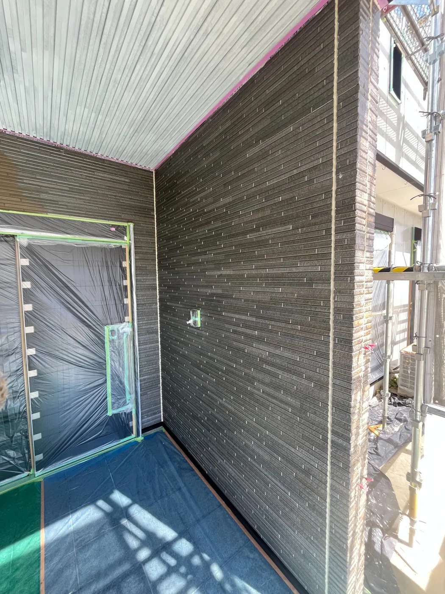
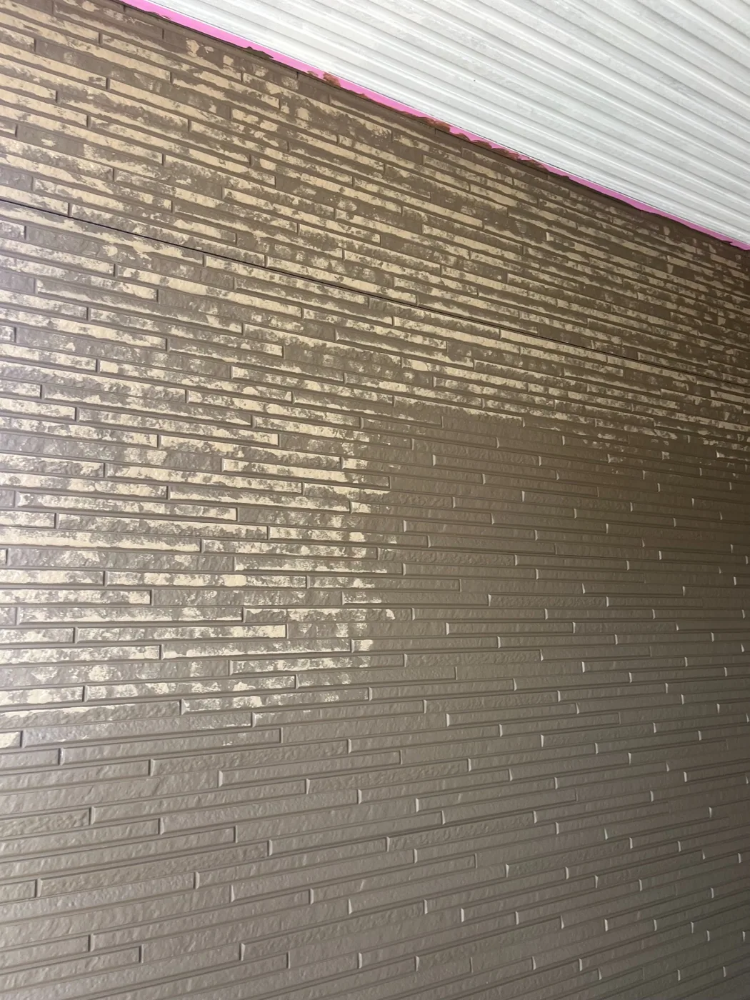
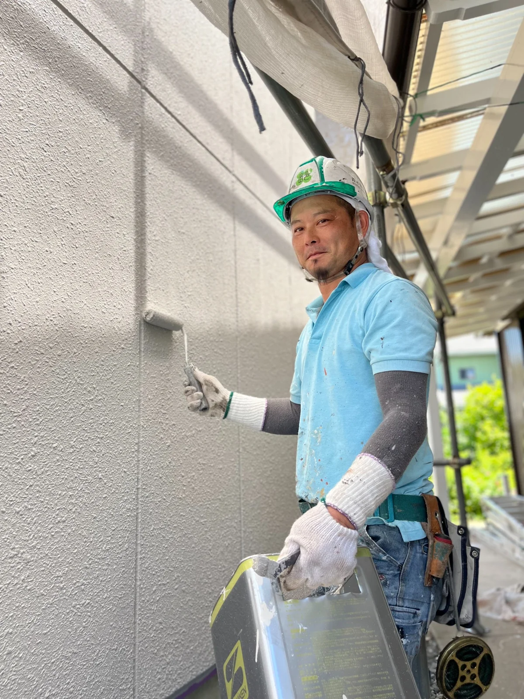

こんなお悩み、ありませんか？
🏠 壁のひび割れが気になる
小さなことでも、相談してよいのかな？
🎨 塗り替え時期がわからない
今すぐ工事するべきか迷っている。
💬 まずは話だけ聞きたい
まだ依頼を決めていないけれど…。
SELECTED WORKS
すべての事例を見る →まずは、こんな施工をしています
代表的な施工写真をピックアップ

HOW WE WORK
仕上がりだけでなく、途中の仕事も。
施工前後だけでなく、養生や細部の仕上がりなども写真でご紹介していく予定です。

※このセクションの説明文は仮案です。
どんな人が塗ってくれるの？
施工写真だけでは伝わらない、職人の顔と仕事をご紹介します。

実際の塗装現場での一枚
鈴木建築塗装｜職人紹介
住まいのこと、
住まいのこと、
気軽に話せる塗装屋さんでありたい。
外壁や屋根の塗装、住まいの補修などを行っています。実際の現場で施工する職人の顔が見えることも、安心して相談していただくための大切なことだと考えています。
小さなご相談も、大歓迎です。
「壁のひび割れが少し気になる」「まだ塗り替えるか決めていない」――そんな段階でも、どうぞお気軽にご相談ください。
✓ 小さな相談・工事を決める前の相談も歓迎（本人確認済み）
01
この仕事を始めたきっかけ
本人からのお話をもとに、職人としての歩みをご紹介する予定です。
回答待ち02
仕事で大切にしていること
養生や仕上げなど、実際の仕事の写真とあわせてご紹介する予定です。
回答待ち03
お客さんに喜んでほしいこと
お客さんへの思いや、仕事を通じて届けたいことをご紹介する予定です。
回答待ち会社情報
- 屋号
- 鈴木建築塗装 ※正式表記を確認中
- 拠点
- 愛知県岡崎市
- 主な工事
- 外壁塗装・屋根塗装・補修工事など
※職人写真は現時点では受領した元写真を仮掲載しています。ご本人希望の「髭を自然に消す」加工は未実施です。本番掲載前に差し替えます。本人未回答の内容は確定情報として記載していません。
相談する前の、よくある不安
Q. 小さなひび割れでも相談できますか？
A. はい、大歓迎です。ひび割れなど小さなことでもお気軽にご相談ください。
Q. まだ塗り替えを決めていなくても大丈夫？
A. もちろん大丈夫です。工事を決める前でも、まずはご相談ください。
※上記の相談歓迎については本人確認済みです。動くFAQ演出は後で統合予定。
住まいのこと、まずはご相談ください。
電話を中心に、LINE・メールの掲載方法は確認中です。